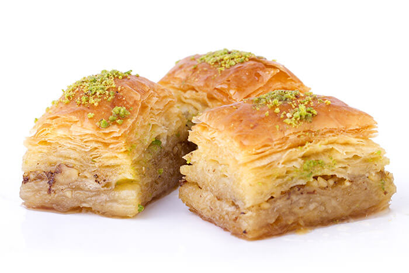
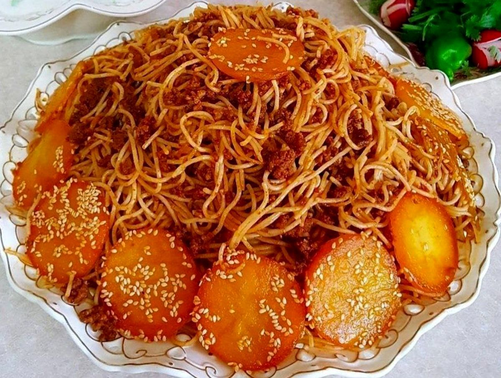
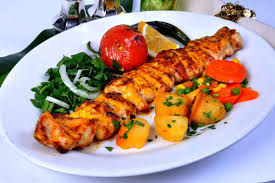
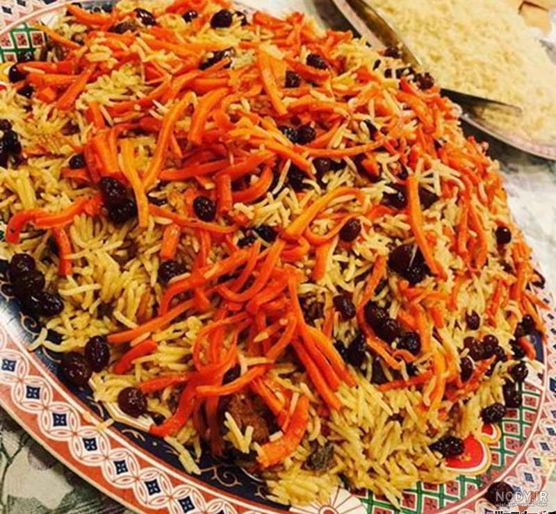

Baghlava

Integredients
- 1 package of phyllo dough (about 16 oz / 450g)
- 2 cups of walnuts or pistachios (chopped)
- 1 cup of unsalted butter (melted)
- 1 teaspoon ground cinnamon
- 1 cup of water
- 1 cup of sugar
- 1/2 cup of honey
- 1 teaspoon of vanilla extract
- A few drops of lemon juice
Instructions
- Prehear the oven to 350°F (175°C)
- Grease a baking dish(9x13 inches)with butter
- Layer 8 sheets of phyllo dough in the dish, brushing each sheet with melted butter.
- Mix chopped nuts and cinnamon in a bowl.
- Add a thin layer of the nut mixture over the phyllo.
- Repeat layering: Add 2 sheets of phyllo, brush with butter, then add nut mixture continue until nuts are used up.
- Top with 8 more sheets of phyllo, brushing each with butter.
- Cut the baklava into diamonds or squares with a sharp knife.
- Bake for 45-50 minutes, until golden and crisp.
For the syrup:
- While baking, combine sugar, water, honey, lemon juice, and vanilla in a saucepan.
- Boil for about 10 minutes, then let it cool slightly.
- When baklava is done, pour the warm syrup over the hot baklava.
- Let it soak for a few hours (or overnight) before serving.
Chocolate Cake
Integredients
- 2 cups purpose flour
- 1 and ¾ cups sugar
- ¾ cup cocoa powder
- 2 teaspoons baking powder
- 1 and ½ teaspoons baking soda
- ½ teaspoon solt
- 2 eggs
- 1 cup milk
- ½ cup oil
- 1 teaspoon vanilla extract
- 1 cup hot water
Instractions
- Preheat the oven to 175°C
- In a large bowl,mix together the flour,sugar,cocoa powder,baking powder,baking soda,and salt.
- Add the eggs, milk, oil, and vanilla. Beat well until the batter is smooth.
- Gradually add the hot water while mixing. The batter will be a bit thin—don’t worry!
- Grease your cake pan and pour the batter into it.
- Bake for 30 to 35 minutes, or until a toothpick inserted comes out clean.
- Let it cool, then top with melted chocolate, ganache, or whipped cream if desired.
Macaroni

Ingredients
- 500g pasta (macaroni)
- 2 tablespoons oil
- 1 medium onion (chopped)
- 2 garlic cloves (minced)
- 250g ground beef or chicken
- 2 tomatoes (chopped) or ½ cup tomato paste
- 1 teaspoon salt
- ½ teaspoon black pepper
- ½ teaspoon turmeric
- Some water
- Optional: bell pepper, mushrooms, or dried herbs
Instructions
- Boil water in a pot, add some salt and oil, then cook the pasta until soft. Drain and set aside.
- In another pot, heat the oil and fry the onion until golden.
- Add garlic and sauté briefly.
- Add ground meat and fry until its color changes.
- Add chopped tomatoes or tomato paste, then mix with salt, pepper, and turmeric.
- Let the sauce cook with a bit of water so the flavors blend.
- Add the drained pasta to the sauce and stir well.
- Cover the pot and let it steam on low heat for about 15 minutes.
Grilled Chicken Kebab

Ingredients
- 500g chicken breast or thigh (cut into medium cubes)
- 1 large onion (grated or thinly sliced)
- 3 tablespoons yogurt
- 2 tablespoons lemon juice
- 2 tablespoons oil
- ½ teaspoon turmeric
- ½ teaspoon black pepper
- ½ teaspoon salt
- ½ teaspoon garlic powder (optional)
- Brewed saffron or natural food color (optional)
Instructions
- In a bowl, mix yogurt, onion, lemon juice, oil, turmeric, salt, pepper, and garlic powder.
- Add chicken pieces and mix well to coat them with the marinade.
- Cover and refrigerate for 3 to 5 hours (or overnight) to marinate well.
- After marination, skewer the chicken pieces.
- Preheat a grill or barbecue, then place the skewers over low heat.
- Turn the skewers every few minutes so the chicken cooks evenly and turns golden.
- Optionally, brush with melted butter or saffron at the end for extra flavor and tenderness.
Kabuli Pulao

Ingredients
- 3 cups rice
- 500g lamb or beef (with or without bone)
- 2 medium onions (chopped)
- 2 large carrots (julienned thinly)
- ½ cup raisins (black or golden)
- ½ tsp saffron or cardamom (optional)
- ½ tsp cinnamon
- ½ tsp black pepper
- 1 tsp salt
- ½ tsp cumin (optional)
- 5 tablespoons oil or ghee
- Water as needed
Instructions
- Wash the rice and soak it in warm water for at least 30 minutes.
- In a pot, heat oil and sauté the onions until golden.
- Add meat and fry until it changes color.
- Add salt, pepper, cinnamon, and cardamom, and stir well.
- Add water, cover the pot, and let the meat cook until tender (about 1.5 to 2 hours).
- Meanwhile, fry the carrots in a little oil until slightly soft, and sauté raisins separately until they puff.
- Once the meat is cooked, strain and keep the broth (to use later for steaming).
- In a separate pot, bring water to boil and cook the rice until it's half-cooked. Then drain it.
- In the final steaming pot, layer rice, meat, then top with carrots and raisins.
- Pour some of the meat broth over the top, cover, and steam on low heat for 30–45 minutes.